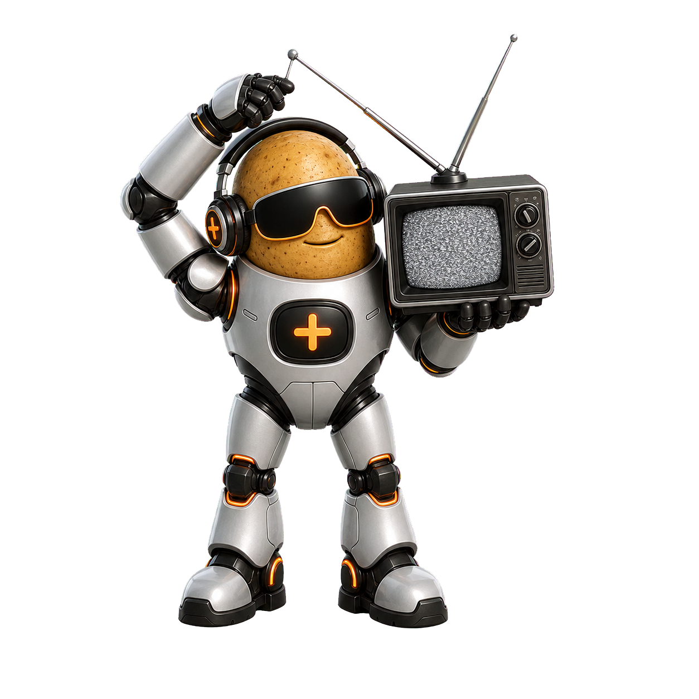
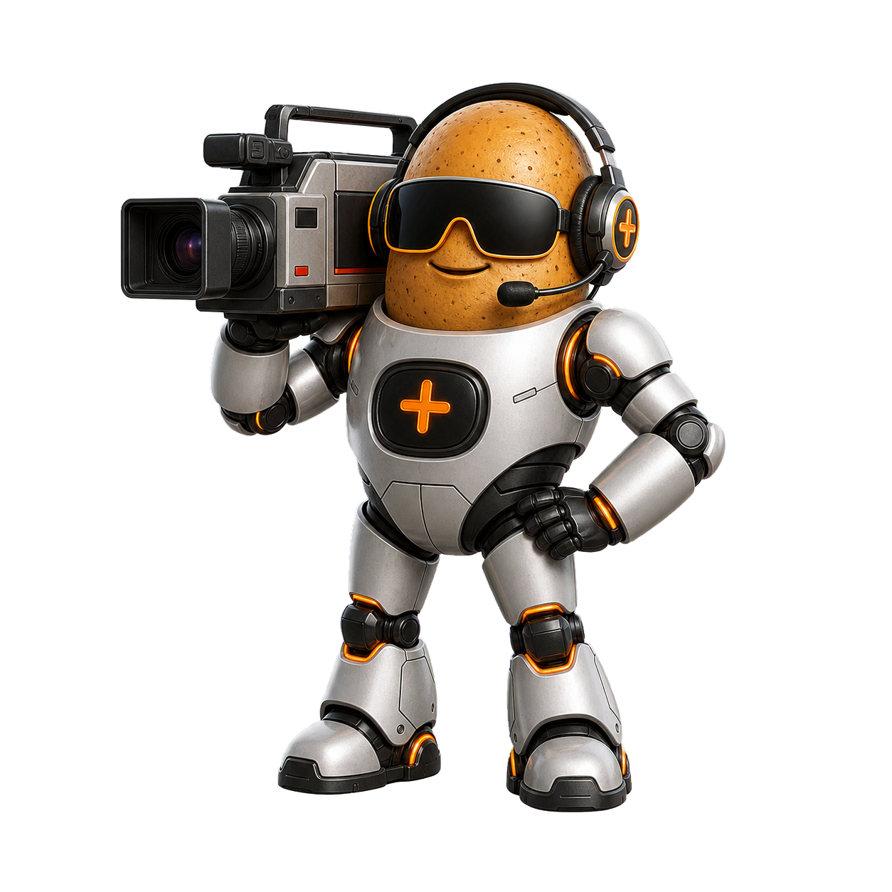
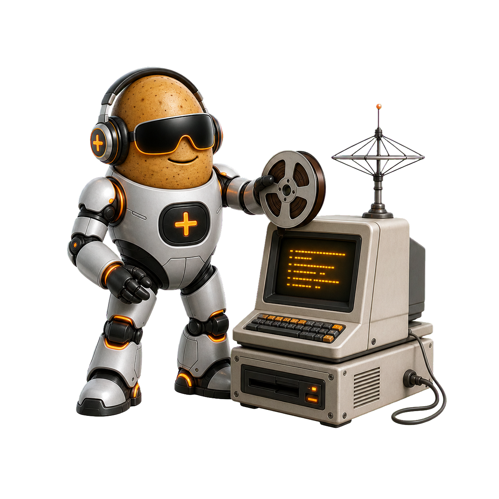
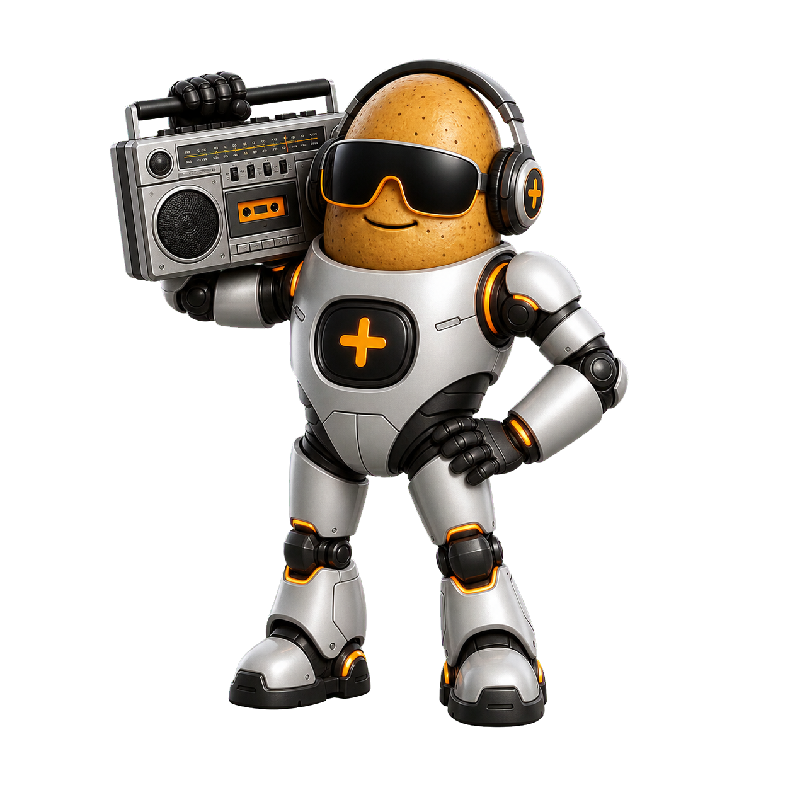
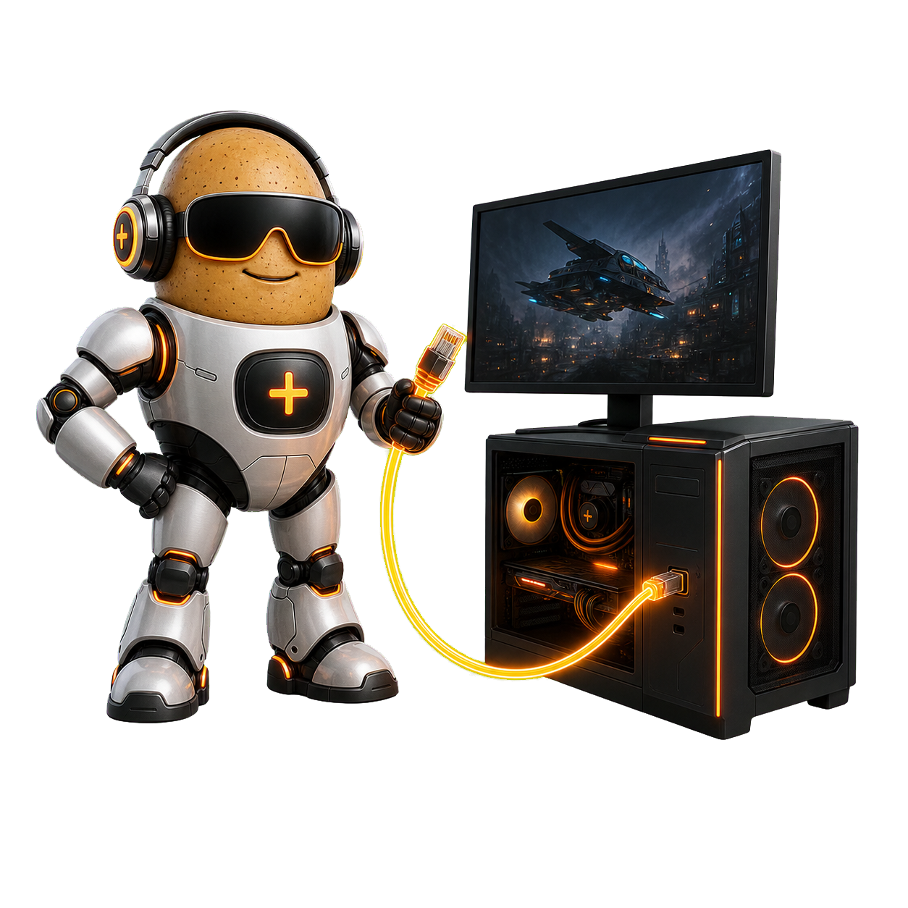

Over The Air
Direct HDHomeRun playback with no guide screen. Pick OTA and it tunes like an old TV, with up/down channel changes and a channel OSD.
HDHomeRunLive TVOld-TV OSD
Tater Tube keeps media, games, PC streaming, and local playback in separate focused modules. The main menu can show a matching Tater mascot for each one.

Direct HDHomeRun playback with no guide screen. Pick OTA and it tunes like an old TV, with up/down channel changes and a channel OSD.
Browse Emby, Jellyfin, or Plex libraries from a VCR-style interface with resume, autoplay, audio selection, subtitles, collections, and TV Mode.

Save public YouTube playlists, browse videos from the couch, and run TV Mode with shuffled channels and optional commercial playlists.

Browse media-only Newznab categories, search releases, view provider-supported trending, and hand selected NZBs to an AltMount/Stremio-compatible streamer.

A cassette-deck music player for Emby/Jellyfin or Plex albums, complete with album-as-mixtape browsing, VU visuals, and tape-style fast-forward.
Browse RetroNAS/MiSTer ROM shares and launch supported systems straight into RetroArch without exposing the RetroArch menu.

Pair with Sunshine through Moonlight, list host apps, and stream a stable Pi profile from a PC or Mac into the Tater Tube appliance.
Browse local folders on the Pi and play common video files or playlists with loop and shuffle options.
The Pi image includes Argon IR defaults, Bluetooth controller pairing, a controller mapper, media keys, mpv OSD overlays, and a local HTTP API for companion apps.